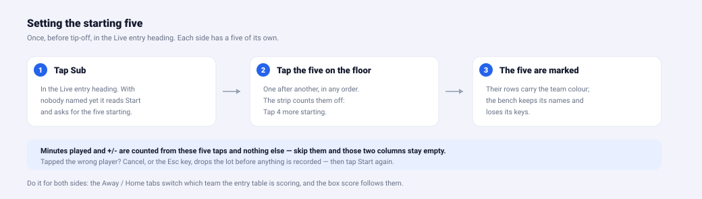
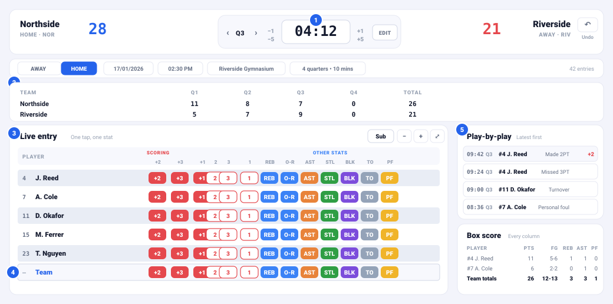
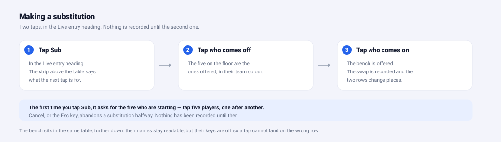
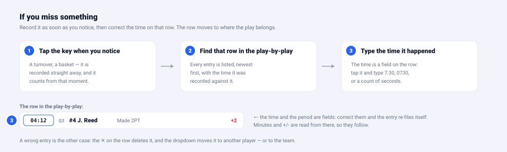
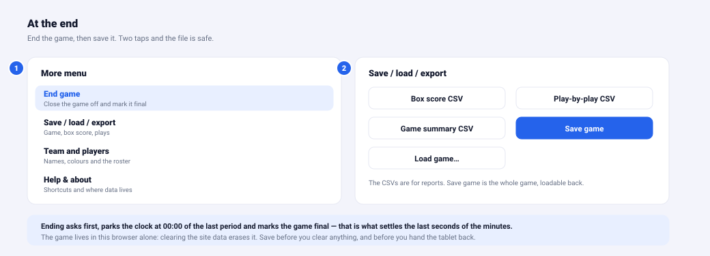

Beginner's guide
Tap a key when something happens. Everything else — the score, the quarter totals, the box score — is worked out from those taps. You never add anything up by hand.
新手指南
有事情發生時，按下對應的按鈕。分數、各節比分、個人數據表等所有數字，都由這些記錄自動計算，你不需要自己加總。
1. Before the game (two minutes)
- Open the app on the tablet.
- More → Team and players: type each team's name and abbreviation, then add players (number, name, Add). A short press on either team's score block opens that team's roster directly.
- More → Game settings: the date, tip-off time, venue and quarter length.
No roster? Skip it. Each team has a row of its own in the table, so you can score a side you have no names for — the opponent whose players nobody is keeping.
1. 賽前兩分鐘
- 在平板上開啟應用程式。
- More → Team and players：輸入兩隊的隊名與縮寫，然後加入球員（號碼、姓名，按 Add）。長按任何一隊的比分區塊，可直接開啟該隊名單。
- More → Game settings：日期、開賽時間、場地與每節長度。
沒有球員名單？可以略過。表格中每隊都有自己的「球隊列」，所以即使沒有球員名單，也可以記錄該隊的數據——例如對手的球員沒有人負責記錄時。
2. Set the five who start

- In the Live entry heading, tap Sub. Until somebody has been named it reads Start and asks for the five starting.
- Tap the five players who are on the floor, one after another, in any order. The strip above the table counts them off — Tap 4 more starting — and each name lands on its row.
- Switch the Away / Home tabs at the top and do the same for the other side.
Minutes played and +/- are worked out from these five taps and nothing else. Skip them and every point still scores — but the MIN and +/- columns of the box score stay empty, because the app never saw who was on the floor.
2. 設定先發五人
- 在 Live entry 標題按 Sub。還沒有人被點選之前，按鈕顯示為 Start，並提示「the five starting」。
- 依次按下在場上的五位球員，順序不拘。表格上方的提示會倒數：Tap 4 more starting，每按一位，姓名就會出現在對應那一列。
- 切換上方的 Away / Home 分頁，為另一隊重複一次。
上陣時間與 +/- 完全由這五下計算出來。略過這一步，得分依然正確，但 Box score 的 MIN 與 +/- 兩欄會留空——因為系統從不知道誰在場上。
3. The screen

- The scoreboard. Tap the clock to start and stop it. The ↶ Undo button is at its right — that is the button to reach for when you tap the wrong key.
- The quarter strip. The score by quarter, added up for you. Check it against the board on the wall.
- Live entry. One row per player, and the keys you tap: the made shots, the misses, then rebounds, assists, steals, blocks, turnovers and fouls.
- The team's own row, at the bottom under the heavier line. Taps here count for the side rather than for a player.
- Play-by-play and box score. What just happened, and where it all stands. Both scroll on their own.
3. 畫面
- 記分牌。按時鐘可開始或停止計時。右邊的 ↶ Undo 是最常用的按鈕——按錯時就按它。
- 各節比分。每一節的得分，系統已替你加總。可以用來核對場邊的記分牌。
- Live entry。每位球員一列，以及你要按的按鈕：投中、失手，然後是籃板、助攻、抄截、封阻、失誤與犯規。
- 球隊列（Team），在下方較粗的分隔線之下。按這裡的數據算在球隊上，而不是某位球員。
- Play-by-play 與 Box score。剛才發生的事，以及目前的總計。兩者各自捲動。
4. Recording a stat
Find the player's row and tap the key that matches what happened. There is
one tap per event: a made two is +2, a missed three is the
3 under Miss, a defensive rebound is REB.
The scoreboard, the quarter strip, the play-by-play and the box score all update at once, because they are the same list of taps read four ways. The row flashes so you can see the tap landed, and there is an Undo in the toast that follows it.
4. 記錄一項數據
找到該球員那一列，按下對應的按鈕。每個事件只需按一下：投中兩分是 +2，三分失手是按 Miss 下面的 3，防守籃板是 REB。
記分牌、各節比分、比賽紀錄與個人數據表會同時更新，因為它們都是同一份記錄的四種讀法。該列會閃一下，讓你知道已記錄；隨後的通知也有 Undo 可以即時取消。
5. The clock
It counts down. Tap the face to start it, tap again to stop it.
Edit beside it types an exact time (7:30, or
0730), and the small −1 −5 +1 +5 buttons nudge it
by seconds.
If the clock and the last play disagree, the strip under the scoreboard says so — set the clock to the right time before you record anything else. Minutes on court are read from this clock, so it is worth keeping honest.
5. 時鐘
時鐘是倒數的。按鐘面開始計時，再按一下停止。旁邊的 EDIT 可以直接輸入時間（7:30，或 0730），而 −1 −5 +1 +5 可按秒微調。
如果時鐘與最後一筆記錄不一致，記分牌下方的橫條會提示你——請先把時鐘調到正確時間，再繼續記錄。上陣時間就是依這個時鐘計算，所以值得保持準確。
6. Substitutions

Before tip-off the same Sub button names the five who start (step 2). Once the game is running it swaps one player for another: tap Sub, tap who comes off, then tap who comes on.
Minutes played and +/- come from this and nothing else, so it is the one thing worth doing carefully. Players on the floor keep their name and their keys; the bench keeps its name but loses its keys, so a tap cannot land on the wrong row.
6. 換人
開賽前，同一個 Sub 按鈕用來設定先發五人（第 2 步）。開賽後，它就是用來換人：按 Sub、按要換出場的球員、再按要換入場的球員。
上陣時間與 +/- 完全由此決定，所以這是最值得小心做好的部分。在場上的球員會保留姓名與按鈕；後備球員保留姓名，但按鈕會收起，避免按錯列。
7. If you miss something

Log it as soon as you notice and correct its time afterwards. The block in the picture above is the entry's time in the play-by-play: it is a field, not a label — type the time the play really happened and the row moves to where it belongs, with the minutes and +/- following it.
For a basket you only need on the scoreboard, the Team total box under the table is quicker: type the points and they land on the board without being credited to anyone.
7. 漏記了怎麼辦
發現漏記就立刻補按，之後再修正時間。上圖中的方塊就是比賽紀錄裡該筆記錄的時間：它是可以輸入的欄位，不是文字。輸入真正發生的時間，該列會移到正確位置，上陣時間與 +/- 也會跟著更新。
如果只是要讓記分牌上的分數正確，表格下方的 Team total 更快：輸入分數，記分牌會加上去，但不會算在任何球員身上。
8. At the end

End game asks first, then parks the clock at 00:00 of the last period and marks the game final — that is what settles the last few seconds of the minutes. Then save.
Save game writes the whole game to one file that loads back in. The three CSVs are for reports. Everything lives in this browser on this tablet and nothing is uploaded, so a game that is not exported is one cleared site data away from being gone.
8. 比賽結束
End game 會先請你確認，然後把時鐘停在最後一節的 00:00，並將比賽標記為已完成——最後幾秒的上陣時間就是這樣定下來的。之後再儲存。
Save game 會把整場比賽寫成一個檔案，可以再次載入。三個 CSV 是給報告用的。所有資料只存在這部平板的這個瀏覽器裡，不會上傳，所以沒有匯出的比賽，只要清除網站資料就會消失。
Five things to remember
- One tap, one event. Every number on the screen is worked out from those taps.
- The clock is a stopwatch, not a feed from the board. Check it against the last play every so often.
- Name the five who start, then tap Sub at every change. That is the only thing minutes and +/- are counted from.
- Nothing is final until you say so. Undo, ✕, the dropdown, the time field — a mistake is always fixable.
- Export when the buzzer goes. The game lives in this browser alone.
五個要點
- 一下記錄，一項數據。畫面上每個數字都由這些記錄計算出來。
- 時鐘是碼錶，不是記分牌的連線。請不時核對它與最後一筆記錄。
- 先設定先發五人，之後每次換人都按 Sub。這是唯一用來計算上陣時間與 +/- 的動作。
- 未確認前都不算定案。Undo、✕、下拉選單、時間欄位——錯誤永遠可以修正。
- 完場哨聲一響就匯出。比賽只存在這個瀏覽器裡。